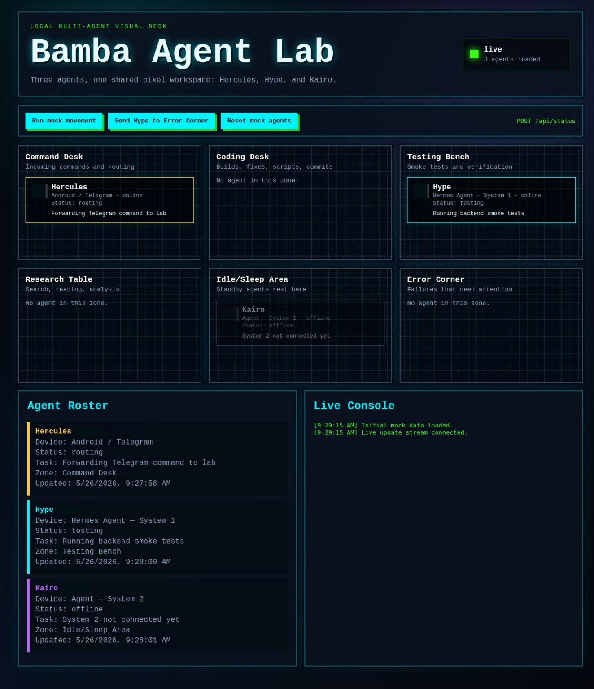

Portfolio-listed · verify status
FLIPhub.ng
A student marketplace concept focused on making listings and buyer–seller connections easier to navigate.
Explore the case study↗
I connect business analysis, automation and practical engineering to turn complex problems into useful, thoughtfully designed systems.
Four examples of applied problem-solving. Each opens a focused case study on the challenge, approach and evidence behind the work.
A student marketplace concept focused on making listings and buyer–seller connections easier to navigate.

Improving how customers describe repair requests and interact with a service business.
An exploration of AI-enabled operations with deliberate permission boundaries and traceable actions.
Turning website quality reviews into structured checks, documented findings and actionable recommendations.
Dedicated spaces for genuine screenshots and demos. Concept art remains clearly separated from proof of working software.
First-build launch artwork showing marketplace browse and sell interfaces. A live screen recording can be added alongside it later.
Open case study ↗
Owner-provided Telegram bot profile. This confirms the bot’s public identity, not its underlying features or operational status.
Open case study ↗Show actual data validation, methodology, and test outputs—not hypothetical profits.
Open case study ↗Owner-supplied promotional artwork illustrating the service brand. Operational screenshots and verified service workflows can be added separately.
Open case study ↗FLIPhub artwork was supplied by the project owner and is presented as promotional design material; its interface mockups are not independent verification of live functionality. Other evidence slots remain pending.
Ideas still being researched, tested or validated. Real progress deserves honest development labels—not invented results.
Systematic research into a rules-based XAUUSD Daily Sweep strategy, using MT5 historical data, Python and controlled testing.
Read Vanta's research case study ↗Token-scanning research with explicit safety gates, data-quality controls and documented testing.
See project notes ↗A small-business recordkeeping concept centered on customer credit, part payments and reconciliations.
A little window into how I think and work. This is a local portfolio demo: no external shell, server commands, or account access.
Welcome to BambaOS. Type help to begin.
Try: whoami · about · projects · skills · contact · clear
A safe, client-side interaction designed to explain the work, not execute operating-system commands.
An early interactive visual desk I built to observe multiple agents across work zones—command routing, coding, testing, research, idle time, and error handling.
The interface shown here uses mock agent data. The project runs locally on my PC and is not a public monitoring service.

Good systems need more than a compelling demo. This is the workflow that helps keep the work practical and accountable.
Understand the people, constraints and underlying problem.
Define workflows, requirements and a realistic scope.
Prototype, implement and iterate with understandable systems.
Check functionality, document evidence and improve.
I'm a Nigerian technology builder, certified business analyst, and hands-on software diagnostics specialist. My work spans business analysis, AI automation, web platforms, device repair, and Web3 research.
Since 2018, I've worked with phones, MacBooks, consoles, firmware and operating-system troubleshooting. Diagnosing real hardware and software issues taught me to work systematically, communicate clearly, and judge a solution by whether it actually works for the person using it.
I now combine that practical background with business analysis and AI-assisted engineering—translating ambiguous requirements into clearer workflows, useful products and testable systems. Projects represented here include FLIPhub.ng, Basil Agent, service operations tools, and ongoing research systems such as Vanta and Quiver.
My academic foundation in Environmental Management informs how I think about interconnected systems, evidence, and long-term consequences. Business analysis adds the tools to turn needs into clear requirements. Technical support and hands-on building keep those ideas grounded in reality.
Explore my professional profileNnamdi Azikiwe University, Awka, Nigeria
Second Class Upper (2:1)
Certified Business Analyst · Requirements, workflows, and product discovery
Phones, MacBooks and consoles · firmware/FRP, diagnostics, OS recovery and repair support (2018–2026)
AI agents, cloud workflows, website QA, commerce tools, Web3 research and digital product development
Understand the problem. Design for the user. Build deliberately. Verify what works.
Hands-on device support, firmware recovery, OS troubleshooting and customer operations.
Requirements elicitation, process mapping, user stories, and clear acceptance criteria.
Automation, agent workflows, website quality checks and research-driven products.
Practical technical support led to systems thinking, business analysis, and a growing focus on software and automation.
Software diagnostics, troubleshooting, device recovery, and solving real customer problems.
Systems thinking, research, evidence, and understanding complex real-world constraints.
Requirements, stakeholder needs, process mapping, product thinking, and validation.
Automation, AI agents, product experiments, quality assurance, and Web3 research.
Formal training complements practical experience and ongoing technical work.
Nnamdi Azikiwe University, Awka, Nigeria. Second Class Upper (2:1).
Business requirements, stakeholder analysis, process workflows and product discovery.
Customer-focused diagnostics, troubleshooting, technical operations and continuing software development.
Whether you need an AI workflow, a structured business process, a product collaborator, technical support or a Web3 research partner, you can contact me through any of the channels below.